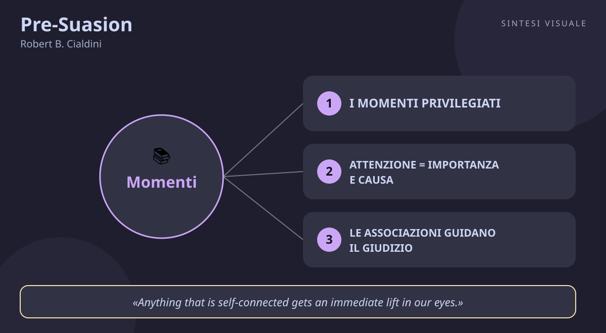

Pre-Suasion
Robert B. Cialdini · Persuasione
«Pre-Suasion»
- Momenti privilegiati
- Attenzione e causa
- Domande che orientano
- Unità
🧭Introduzione
Robert Cialdini non è un venditore né un guru: è uno psicologo sociale, professore all'Arizona State University, diventato famoso perché negli anni Settanta si è infiltrato sotto mentite spoglie in concessionarie, call center e associazioni benefiche per studiare dal vivo le tecniche di chi convince per mestiere. Da quel lavoro nacque Influence (1984), il libro che ha fissato i sei principi universali della persuasione. Trentadue anni dopo, Cialdini torna con la domanda che il primo libro aveva lasciato aperta: e se il segreto non stesse in cosa diciamo, ma in cosa facciamo prima di dirlo? Pubblicato il 6 settembre 2016 da Simon & Schuster (oltre 400 pagine), Pre-Suasion è il prequel di Influence: la scienza di ciò che accade nel momento prima della richiesta.
Perché conta oggi: viviamo nell'economia dell'attenzione — titoli, anteprime, prime tre secondi di un video decidono tutto prima ancora che il messaggio arrivi. Chi controlla cosa guardi un attimo prima di decidere, controlla in gran parte la decisione stessa. Capire la pre-suasione serve per convincere meglio (colloqui, vendite, proposte) e soprattutto per difendersi da chi la usa contro di noi ogni giorno.
A chi è utile: a chi vende, negozia o presenta idee; a chi crea contenuti, insegna o guida persone; e a ogni consumatore e cittadino che vuole capire perché certe pubblicità, certi politici e certi siti sembrano "leggerci nel pensiero".
📘Riassunto
La scintilla centrale: i persuasori migliori non vincono con l'argomento più forte, ma con ciò che fanno e dicono prima di avanzare la richiesta — preparano il terreno dell'attenzione così che il pubblico arrivi al messaggio già nello stato d'animo giusto per dire sì.
La struttura logica procede in tre parti:
- Parte 1 — Il pre-caricamento dell'attenzione: l'attenzione canalizzata è il vero motore delle decisioni; ciò che occupa il centro dell'attenzione viene percepito come più importante e persino come causa degli eventi. Da qui i "momenti privilegiati": finestre in cui il pubblico è massimamente recettivo.
- Parte 2 — I meccanismi: come creare quei momenti — associazioni positive (immagini, metafore, contesti), domande che orientano la ricerca mentale, il richiamo di sé, ciò che è incompiuto o misterioso trattiene l'attenzione.
- Parte 3 — L'ottimizzazione etica: Cialdini rilegge i suoi sei principi di Influence (reciprocità, simpatia, prova sociale, autorità, scarsità, coerenza) più il settimo, l'unità, come leve su cui puntare l'attenzione — e chiude con il capitolo sull'etica: la pre-suasione funziona nel lungo periodo solo se ciò che si mette in luce è vero.
Il punto di svolta: l'esperimento dei passanti al centro commerciale — a chi veniva chiesto "ti consideri una persona disponibile?" prima di proporre un sondaggio, la partecipazione balzava dal 29% al 77,3%. Il lettore capisce che non serve cambiare le idee delle persone: basta cambiare ciò a cui stanno pensando un attimo prima.
L'eredità oggi: il libro ha fissato il vocabolario del marketing moderno (priming, attenzione come moneta, "momenti privilegiati") e ha aggiunto il settimo principio della persuasione, l'unità; è diventato il manuale di chi progetta landing page, discorsi e campagne sapendo che la battaglia si vince prima che inizi.
💡Concetti chiave
- I momenti privilegiati: la persuasione si gioca prima della richiesta, preparando lo stato d'animo giusto.
- Attenzione = importanza e causa: ciò che è al centro dell'attenzione sembra più importante e viene scambiato per causa.
- Le associazioni guidano il giudizio: collegare il messaggio a stimoli positivi (o negativi) trasferisce quelle sensazioni sul messaggio.
- Le domande orientano la mente: una domanda ben posta fa cercare conferme in una direzione e predispone alla risposta.
- Il richiamo di sé apre ogni porta: tutto ciò che tocca l'identità personale ottiene attenzione immediata e benevolenza.
- L'unità, il settimo principio: condividere un'identità ("noi") è la leva persuasiva più profonda — e impone l'etica.
📖1. I momenti privilegiati
- Definizione sono le finestre di tempo immediatamente precedenti a una richiesta in cui il pubblico è massimamente recettivo: il persuasore esperto dedica più energie a costruire ciò che accade prima della richiesta che alla richiesta stessa — come il giardiniere che prepara il terreno perché anche i semi migliori non attecchiscono sul sasso.
- Esempio un consulente che prima di comunicare il prezzo scherza "come vedi, non potrò certo chiederti un milione di euro per questo" elimina quasi ogni obiezione sul costo: ha creato un momento privilegiato in cui il prezzo reale, al confronto, sembra ragionevole.
- Come applicarlo (a) prima di ogni richiesta importante (aumento, proposta, vendita) pianifica i 2-3 minuti precedenti; (b) apri con qualcosa che metta l'interlocutore nello stato d'animo coerente con ciò che chiederai (un complimento sincero prima di chiedere collaborazione); (c) presenta la richiesta nel picco di quella recettività, senza indugi.
- Errore comune improvvisare l'apertura e curare solo l'argomentazione — è come lucidare i semi e dimenticare il terreno; oppure creare il momento giusto e poi parlare troppo, lasciandolo raffreddare.
- Collegamento Sun Tzu ("ogni battaglia è vinta prima di essere combattuta") e la preparazione atletica: la gara si decide nell'allenamento, non sul campo.
📖2. Attenzione = importanza e causa
- Definizione la mente umana segue una scorciatoia: ciò che occupa il centro dell'attenzione in un dato momento viene giudicato più importante di tutto il resto e, spesso, scambiato per la causa di ciò che accade dopo — anche quando è solo una coincidenza temporale.
- Esempio in un colloquio di lavoro, se i primi cinque minuti ruotano intorno a un tuo progetto riuscito (portfolio aperto sulla scrivania, aneddoto raccontato con passione), tutto il resto del colloquio verrà letto attraverso quella lente: sembrerai "la persona di quel successo".
- Come applicarlo (a) decidi qual è l'unico fattore che vuoi sembri importante e mettilo al centro (slide iniziale, prima frase, oggetto sul tavolo); (b) elimina i concorrenti dell'attenzione (notifiche, disordine, troppi punti insieme); (c) ricorda che vale anche al contrario: ciò che tieni nascosto sembra irrilevante.
- Errore comune riempire presentazioni e discorsi di troppi punti "importanti" — se tutto è al centro, niente è al centro e l'attenzione decide da sola, di solito sul dettaglio sbagliato.
- Collegamento Daniel Kahneman (Pensieri lenti e veloci): il Sistema 1 giudica in fretta ciò che è saliente; la pre-suasione è l'uso deliberato di questa euristica.
📖3. Le associazioni guidano il giudizio
- Definizione avvicinare il messaggio a stimoli positivi — immagini, musica, parole, ambienti piacevoli — trasferisce quelle sensazioni sul messaggio stesso, senza che il pubblico se ne accorga; è il principio del condizionamento applicato alla comunicazione.
- Esempio un sito di consulenza che mostra in homepage foto luminose di team sorridenti e uffici ordinati "contagia" l'offerta di quelle sensazioni: il visitatore giudica il servizio più affidabile prima ancora di leggere una riga di testo.
- Come applicarlo (a) scegli lo sfondo sensoriale del tuo messaggio (immagini, luogo dell'incontro, musica d'attesa); (b) usa metafore con carica positiva coerente ("costruire", "illuminare", "aprire") ed evita quelle belliche se vuoi collaborazione; (c) associa te stesso a buone notizie e successi altrui ogni volta che puoi, con sincerità.
- Errore comune usare associazioni positive false o stonate (foto stock sorridenti su un servizio serio, metafore belliche in una trattativa che richiede fiducia) — il pubblico avverte la forzatura e l'effetto si rovescia.
- Collegamento il "priming" della psicologia cognitiva e il product placement al cinema: non ti dicono "compra", ti mostrano l'eroe che lo usa mentre vince.
📖4. Le domande orientano la mente
- Definizione porre una domanda spinge chi ascolta a cercare dentro di sé esempi e conferme nella direzione della domanda stessa: chiedi "sei insoddisfatto della tua vita sociale?" e la mente andrà a caccia di insoddisfazioni; chiedi il contrario e troverà soddisfazioni — i reclutatori di sette lo sanno bene.
- Esempio un venditore di corsi che chiede "quanto ti è costato finora non sapere l'inglese?" fa ripescare al cliente tutti gli episodi di imbarazzo e occasioni perse: quando arriva il prezzo, il corso sembra già un rimedio necessario.
- Come applicarlo (a) prima di una proposta, poni una domanda la cui risposta sincera porti dove ti serve ("ti consideri una persona che mantiene le promesse?" prima di chiedere un impegno); (b) lascia il tempo di rispondere davvero, anche solo mentalmente; (c) aggancia la richiesta alla risposta appena data ("proprio per questo...").
- Errore comune fare domande trabocchetto o troppo palesi ("non vuoi forse il meglio per i tuoi figli?") — se l'interlocutore fiuta la manipolazione, la difesa cancella ogni effetto e rovina la fiducia.
- Collegamento Socrate e la maieutica: le domande giuste fanno emergere ciò che è già dentro; Cialdini ne mostra l'uso persuasivo, nel bene e nel male.
📖5. Il richiamo di sé apre ogni porta
- Definizione tutto ciò che è collegato a noi stessi — il nostro nome, la nostra immagine, le nostre caratteristiche dichiarate — ottiene un'immediata promozione agli occhi della nostra mente: il sé è la calamita più potente dell'attenzione.
- Esempio un'insegnante che prima di assegnare un compito difficile chiede alla classe "chi di voi si considera una persona tenace?" ottiene il doppio dell'impegno: nessuno vuole smentire l'immagine di sé appena affermata ad alta voce.
- Come applicarlo (a) invita l'interlocutore a dichiarare (anche solo a sé stesso) il tratto utile — disponibilità, curiosità, coraggio — prima della richiesta coerente; (b) personalizza: usa il nome, richiama esperienze sue specifiche; (c) collega la tua proposta alla sua identità ("per una persona precisa come te...").
- Errore comune adulare in modo generico ("lei è una persona speciale") senza aggancio reale: il complimento vuoto viene classificato come ruffianeria e chiude la porta invece di aprirla.
- Collegamento il principio di coerenza di Influence e l'effetto "cocktail party" (il nostro nome ci fa voltare anche nel frastuono): il sé prima di tutto.
📖6. L'unità, il settimo principio
- Definizione accanto ai sei principi classici, Cialdini ne aggiunge uno nuovo: l'unità — la percezione di identità condivisa ("siamo noi", stessa famiglia, stessa squadra, stessi valori) crea il legame persuasivo più forte, perché agiamo per il bene di chi sentiamo come parte di noi.
- Esempio un capo che prima di chiedere straordinari ricorda alla squadra "noi siamo quelli che non mollano mai un cliente" ottiene adesione volontaria: dire no significherebbe uscire dal "noi".
- Come applicarlo (a) costruisci il "noi" prima di averne bisogno — riti, linguaggio condiviso, piccole vittorie di squadra; (b) richiama l'appartenenza comune prima delle richieste difficili; (c) includi davvero: l'unità funziona solo se l'altro ci crede, non se è uno slogan.
- Errore comune invocare il "noi" solo quando serve chiedere sacrifici ("siamo una famiglia, quindi accetta il taglio") — l'uso strumentale distrugge la fiducia e trasforma l'unità in cinismo.
- Collegamento l'ultimo capitolo del libro, sull'etica: la pre-suasione dura solo se ciò che metti sotto i riflettori è vero — chi inganna viene smascherato da un pubblico ormai consapevole, e paga con la reputazione.
💬Citazioni da ricordare
"The highest achievers spent more time crafting what they did and said before making a request. They set about their mission as skilled gardeners who know that even the finest seeds will not take root in stony soil or poorly prepared ground." — I migliori dedicano più tempo a preparare il prima che a formulare la richiesta: conta perché rovescia l'idea che convincere sia questione di belle parole al momento giusto.
"Optimal persuasion is achieved through optimal pre-suasion. To change minds, a pre-suader must also change states of mind." — La persuasione ottimale nasce da una pre-suasione ottimale: conta perché è la formula del libro in una frase — non cambiare le menti, cambia gli stati d'animo.
"Anything that is self-connected gets an immediate lift in our eyes." — Tutto ciò che è legato a noi stessi sale subito di valore ai nostri occhi: conta perché spiega in una riga il potere del richiamo di sé.
Nel testo spiccano alcuni passaggi chiave: non serve cambiare le idee delle persone: basta cambiare ciò a cui stanno pensando un attimo prima; chi controlla cosa guardi un attimo prima di decidere, controlla in gran parte la decisione stessa; e il monito etico che chiude il libro: la pre-suasione funziona nel lungo periodo solo se ciò che si mette in luce è vero.
🌍Esempi di oggi
- Il prezzo "ancorato" al ristorante: il menù mette in alto una bottiglia da 120 euro non per venderla, ma per rendere normali quelle da 30: il tuo occhio ha appena vissuto un momento privilegiato e il conto sembra leggero. È attenzione canalizzata più associazione.
- Il collega che chiede "sei una persona affidabile?": prima di scaricarti un lavoro urgente, un collega ti chiede se ti consideri affidabile e racconta di quanto il team conti su di te. Dire di no ora costerebbe caro alla tua immagine: domanda orientante più richiamo di sé in azione.
- Lo spot con il cane e il bambino: una pubblicità di un'assicurazione mostra un bambino che ride e un cane che scodinzola prima ancora del logo. Non parla di polizze: ti mette di buonumore e poi associa quel buonumore al marchio. Pura pre-suasione per associazioni.
🛠️Azioni pratiche
- Prepara un "prima": scegli una richiesta importante che farai nei prossimi giorni e scrivi su un foglio cosa dirai o farai nei 2 minuti precedenti per creare lo stato d'animo giusto — poi eseguilo davvero.
- Fai una domanda prima di chiedere: prima della prossima richiesta (aiuto, parere, vendita), poni una domanda sincera la cui risposta prepari il sì ("ti consideri una persona curiosa di provare cose nuove?") e osserva la differenza.
- Caccia alla pre-suasione subita: per tre giorni annota ogni volta che un annuncio, un sito o un venditore cerca di catturare la tua attenzione prima del messaggio (immagini, domande, omaggi): riconoscerla è il primo vaccino.
💎Da portare a casa
Chi vince non è chi argomenta meglio, ma chi prepara meglio il momento prima: cura il terreno e il sì verrà da sé.
Vuoi approfondire? Rispondi in chat con il numero di un concetto (1-6) e lo espando con altri esempi ed esperimenti, oppure fammi una domanda su un tema: persuasione, vendite, negoziazione, public speaking, stress, emozioni, carriera.
🖼️In un colpo d’occhio

Tocca l’immagine per ingrandirla.